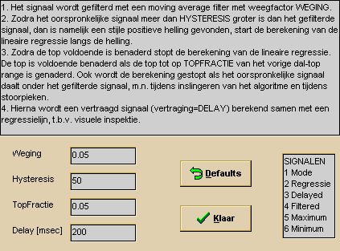

RF 2, Onset Systolische Bloeddruk
Omschrijving
Deze rekenroutine bepaalt de onset van de systolische bloeddruk. Tezamen met een R-top detector (zie bijv. rekenfunktie 1) kan zodoende het tijdsverschil tussen R-top van het ECG en de onset van de systolische bloeddruk te bepalen.
|
Inputs |
Parameters |
Outputs |
|
Bloeddruk |
WegingHysteresisTopfractieDelay |
Mode signaalRegressie bepaling + bepaalde regressieVertraagde bloeddruk, synchroon met regressielijnGefilterde bloeddrukSystoleDiastole |
Bij de bepaling van de bloeddruk onset zijn de volgende signaal-technische problemen aanwezig:
 het signaal bevat vaak veel ruis
het signaal bevat vaak veel ruis
 het signaal voor de opgaande flank is erg variant
het signaal voor de opgaande flank is erg variant
 de onset wordt gevormd door een S-flank, dus langzame aanzet
de onset wordt gevormd door een S-flank, dus langzame aanzet
 de totale amplitude van het signaal varieert
de totale amplitude van het signaal varieert
Om ondanks deze moeilijkheden toch een goede onset te bepalen wordt het volgende principe gebruikt:
 bepaal een lineaire regressie over het rechte stuk van de opgaande flank (op deze wijze wordt een optimale signaal-ruis verhouding verkregen)
bepaal een lineaire regressie over het rechte stuk van de opgaande flank (op deze wijze wordt een optimale signaal-ruis verhouding verkregen)
 bepaal de diastolische bloeddruk, zijnde het minumum van het (zwaar) gefilterde signaal. Hier heeft een (lineaire) regressie berekening geen zin, omdat de curve voorafgaand aan de opgaande flank zeer variant is (van stijgend tot dalend).Trek door de diastolische waarde een horizontale lijn.
bepaal de diastolische bloeddruk, zijnde het minumum van het (zwaar) gefilterde signaal. Hier heeft een (lineaire) regressie berekening geen zin, omdat de curve voorafgaand aan de opgaande flank zeer variant is (van stijgend tot dalend).Trek door de diastolische waarde een horizontale lijn.
 Het snijpunt van de aldus bepaald regressielijn en de horizontale diastolische lijn wordt nu gedefinieerd als de onset.
Het snijpunt van de aldus bepaald regressielijn en de horizontale diastolische lijn wordt nu gedefinieerd als de onset.
Mits de opgaande flanksteilheid redelijk constant is, wordt slechts een constante fout gemaakt ten opzichte van de echte onset.
De betekenis van de variabele MODE:
|
mode=0 |
zoeken naar een opgaande flank er wordt een opgaande flank gedetekteerd als het huidige sample veel groter is dan het gefilterde signaal (het verschil moet minimaal gelijk zijn aan HYSTERESIS. |
|
mode=1 |
bezig met opgaande flank bepaal nu de lineaire regressie, net zolang totdat bijna het vorige maximum is bereikt. TOPFRACTIE geeft de percentuele afstand tot de (vorige) top, waarop de regressie wordt beeindigd. De regressie wordt eveneens beeindigd zodra het sample onder het gefilterde signaal komt, immers dan moet er een daling zijn ingetreden. |
|
mode=2 |
Wacht een vaste tijd totdat de berekende regressie coefficienten ook als lijn kunnen worden getekend. Dit heeft puur een controle funktie, immers door nu het vertraagde signaal en de regressie lijn over elkaar te tekenen, kan de regressie worden gecontroleerd. Als de regressie over te weinig punten is berekend, dan wordt niet naar mode=3 gegaan, maar wordt teruggekeerd naar mode=0. |
|
mode=3 |
Teken 100 punten van de berekende regressielijn |
Voor het testen van de juiste instelling kan het volgende stramien worden gebruikt:
Ruwe controle van de onset detectie:
zet de volgende signalen in 1 venster (allen in compressie=peak):
 bloeddruk
bloeddruk
 output 4, gefilterde bloeddruk
output 4, gefilterde bloeddruk
 output 1, mode signaal
output 1, mode signaal
 output 7, ECG detector
output 7, ECG detector
Bekijk nu 1 a 2 bloeddruk perioden, nu moet het volgende gelden:
 Mode=1 moet gedurende een groot deel (het lineaire stuk) van de opgaande flank geldig zijn
Mode=1 moet gedurende een groot deel (het lineaire stuk) van de opgaande flank geldig zijn
 Indien mode 1 tekort aanwezig is, verlaag dan de HYSTERESIS van 50 naar bijvoorbeeld 30.
Indien mode 1 tekort aanwezig is, verlaag dan de HYSTERESIS van 50 naar bijvoorbeeld 30.
 De topfractie is percentueel en zal zelden behoeven te worden aangepast.
De topfractie is percentueel en zal zelden behoeven te worden aangepast.
 De filtering is vrij zwaar en zal in het algemeen ook niet behoeven te worden aangepast.
De filtering is vrij zwaar en zal in het algemeen ook niet behoeven te worden aangepast.
 De omschakeling van mode 2 naar mode 3 moet plaatsvinden voor de R-top detectie.
De omschakeling van mode 2 naar mode 3 moet plaatsvinden voor de R-top detectie.
Indien dit niet het geval is, kan de delay worden verlaagd. Indien mode 2 niet zichtbaar is, moet de delay worden vergroot.
Nauwkeurige controle van de onset detectie:
Zet de volgende signalen in 1 venster (identieke versterking):
 output 3 = vertraagde bloeddruk
output 3 = vertraagde bloeddruk
 output 2 = regressie gemeten en berekend
output 2 = regressie gemeten en berekend
De regressielijn door de opgaande flank van het vertraagde bloeddruk signaal is een rechte lijn !. Het snijpunt met de voorgaande horizontale lijn (diastole) is het bloeddruk Onset punt.
Instellingen venster
